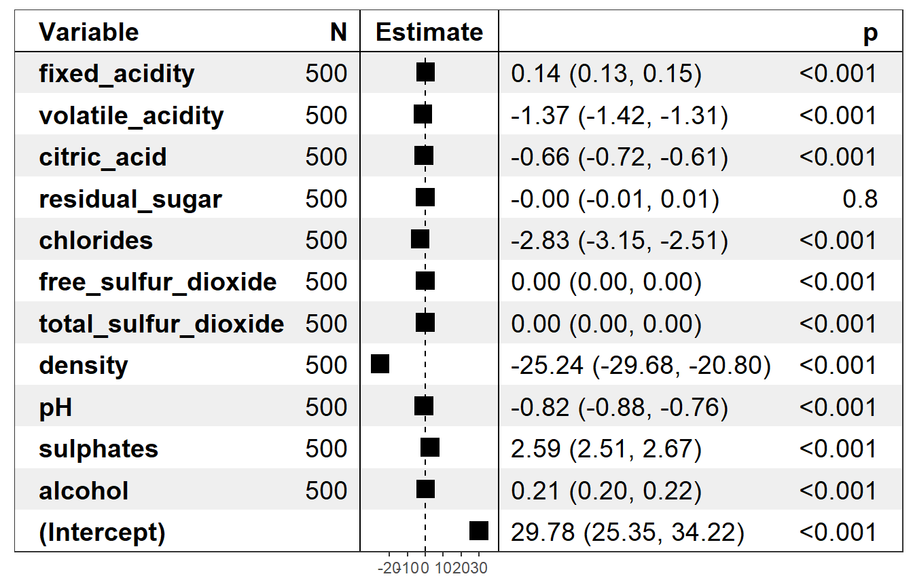
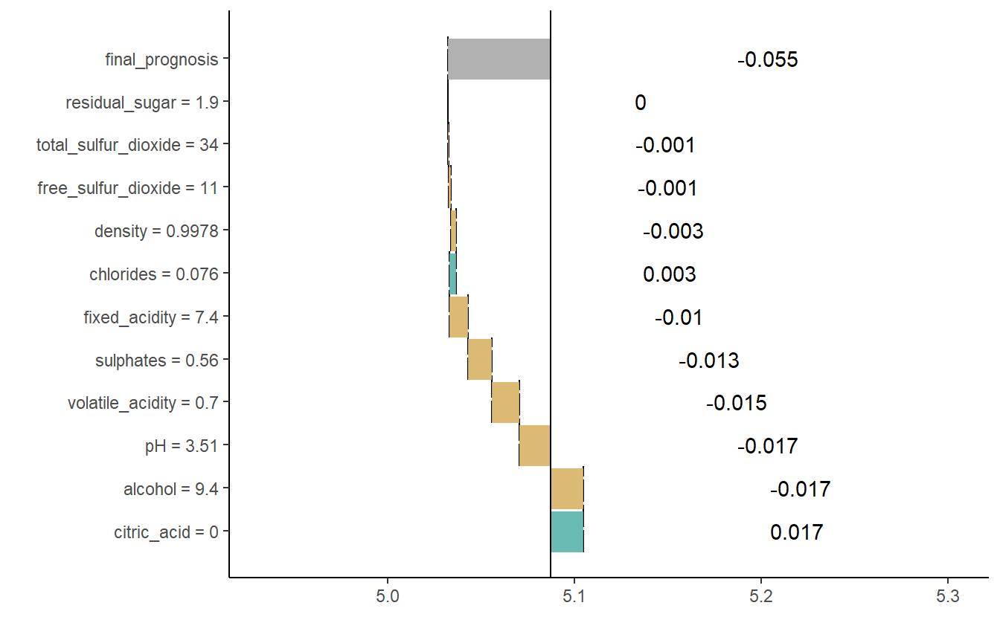

live package use case: wine quality data
The live package approximates black box model (here SVM model) with a simpler white box model (here linear regression model) to explain the local structure of a black box model and in consequence to assess how features contribute into a single prediction.
About the data
The wine quality data is a well-known dataset which is commonly used as an example in predictive modeling. The main objective associated with this dataset is to predict the quality of some variants of Portuguese ,,Vinho Verde’’ based on 11 chemical properties. According to the results from the original article, the Support Vector Machine (SVM) model performs better than other models including linear regression, neural networks and others. We will explain the prediction for the fifth case in the dataset.
wine[5, ]## # A tibble: 1 x 12
## fixed_acidity volatile_acidity citric_acid residual_sugar chlorides
## <dbl> <dbl> <dbl> <dbl> <dbl>
## 1 7.40 0.700 0. 1.90 0.0760
## # ... with 7 more variables: free_sulfur_dioxide <dbl>,
## # total_sulfur_dioxide <dbl>, density <dbl>, pH <dbl>, sulphates <dbl>,
## # alcohol <dbl>, quality <int>Explaining the prediction
Once we have the fitted model, we need to generate artificial observations around the selected observation for local exploration. We use sample_locally2 function.
wine_svm <- e1071::svm(quality ~., data = wine)
similar <- sample_locally2(data = wine,
explained_instance = wine[5, ],
explained_var = "quality",
size = 500)This function generates observations that are similar to the observation of interest. Their number is controled by size argument. Two method of sampling are available through method argument. Method “live” changes a value of one variable per new observations, method “lime” permutes each column. Object returned by the function is a list that contains the dataset, name of the target variable and the explained instance.
The next step is adding black box model predictions to the similar observations.
similar1 <- add_predictions2(to_explain = similar,
black_box_model = wine_svm)If multiple models are to be explained, there is no need to generate multiple artificial datasets. Predictions of each model on a single simulated dataset can be added with the use of add_predictions2 function. A different object should be created for each model, but the same result of a call to sample_locally2 function should be used a to_explain argument. Black box model can be passed as a model object or as a name of learner. While the object created by sample_locally2 function stores the dataset, explained instance and the name of the response variable, object returned by add_predictions2 function also stores the fitted black box model. The result of applying sample_locally2 functions doesn’t contain the response and the result of add_predictions2 contains a column with model predictions, which has the same name as response in original dataset. If a mlr name of a black box model is passed, dataset to train the model needs to be provided, too.
Once the artificial data points around the case of interest are generated, we may fit the white box model to them. Here we fit linear regression model using fit_explanation2 function.
wine_expl <- fit_explanation2(live_object = similar1,
white_box = "regr.lm")This function returns a native mlr object. Model object (for example lm object) can be extracted with the use of getLearnerModel function from mlr. For datasets with larger number of variables, we could obtain sparse results by setting selection = TRUE in the fit_explanation2 function. With this option variable selection based on LASSO implemented in glmnet package is performed. Features can be standardize before fitting explanation model by setting standardize argument to TRUE. When using Generalized Linear Model as a white box model it is possible to set family argument to one of the distribution families available in glm and glmnet functions via response_family argument to fit_explanation2. Moreover, for explanation models that support weights, observation can be weighted according to their distance from the explained instance. This behavior is controlled via kernel argument. Default kernel is gaussian kernel. If observations do not need to be weighted, identity_kernel can be used. User can define his own kernels, which are simply a function of two arguments that return a single number.
The white box model wine_expl approximates the black box model wine_svm around the selected observation. Now we can visualize it with the generic plot function. If the model chosen as the white box has a plot method, the function will call it on the appropriate object. Two special plots are available for regression problems.
Forest plot from forestmodel package focuses on the local structure of the model by plotting estimates of the regressions coefficients along with confidence intervals and p-values.
plot(wine_expl, type = "forest")
Break Down Plots or waterfall plots from breakDown package display how predictors contribute to the prediction. For details see breakDown documentation.
plot(wine_expl, type = "waterfall")